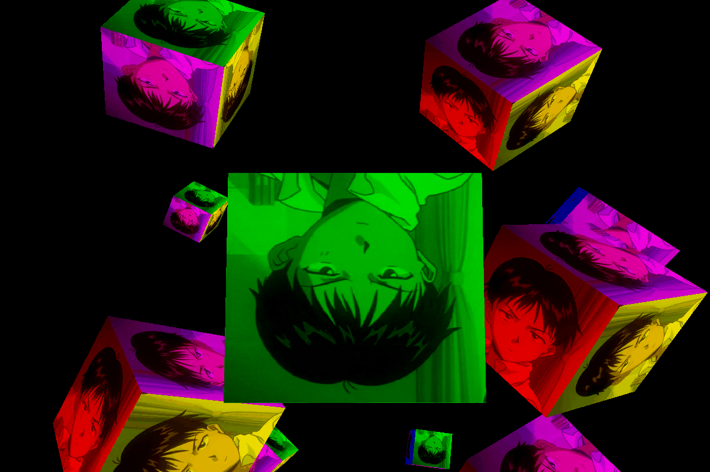
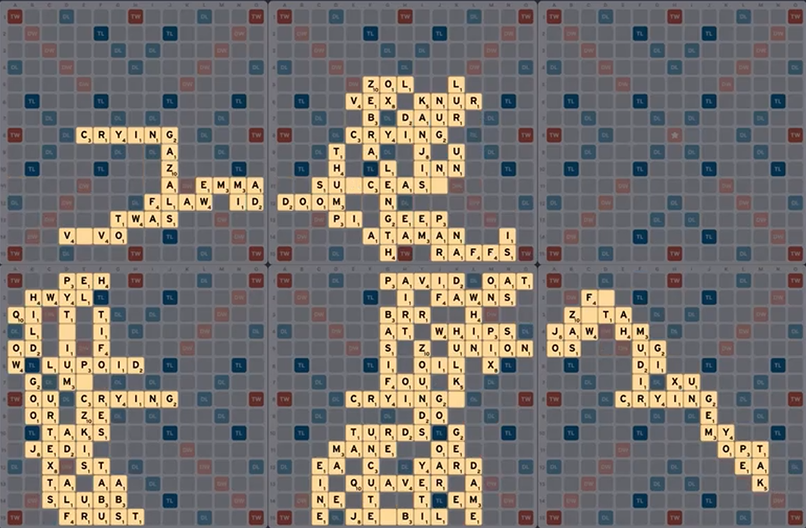

What is Demoscene?
演示场景是什么？ デモシーンは何か？

From Wikipedia[link]: The demoscene is an international computer art subculture focused on producing demos: self-contained, sometimes extremely small, computer programs that produce audiovisual presentations. The purpose of a demo is to show off programming, visual art, and musical skills.
维基百科[link]: 演示场景是一种计算机艺术亚文化，以制作包含音乐与实时渲染的画面的包兼视听效果的演示程序来表现制作者的艺术、音乐及编程技能。
What is "Bad Apple!!"?
From Vocaloid Wiki[link]: "Bad Apple!!" is a song originating from the Touhou Project series. Lyrically, the song describes a person going through a state of apathy and struggling to try to change themself.
The black-and-white shadow art of the music video makes "Bad Apple!!" a prime target for porting onto unconventional and bizarre platforms and doing so is a long-time tradition of the internet. My objective as a Bad Apple demoscene computer scientist is to play the music video on as many software mediums as possible!!
"Bad Apple!!" on Valid Scrabble Games

Inspired by Monte Carlo algorithm Scrabble bots, I wrote my own pseudo-AI algorithm that aimed for maximising a heuristic that caused the final gamestate to reflect as closely as possible a desired frame of the "Bad Apple!!" music video. All boards are valid games that can be played according to the official rules of Scrabble. Also in the French and Spanish versions of the game.
Video (at timestamp 14:24):
"Bad Apple!!" on a Turing Machine
Video (at timestamp 15:00):
"Bad Apple!!" on Desmos Graphing Calculator
My most watched demo, frames are converted to edges with Canny edge detection and then vectors with an SVG conversion tool like Potrace. The vectors can then be transcribed directly as LaTeX expressions which are fed to the Desmos Graphing Calculator API.
Code: DesmosBezierRenderer
Video:
Other things I've played "Bad Apple!!" on
The code for most of them can be found compiled in this repository.